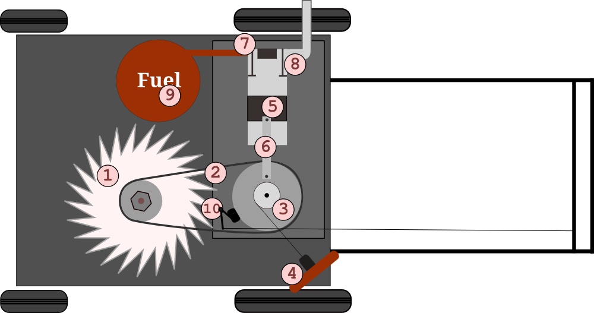
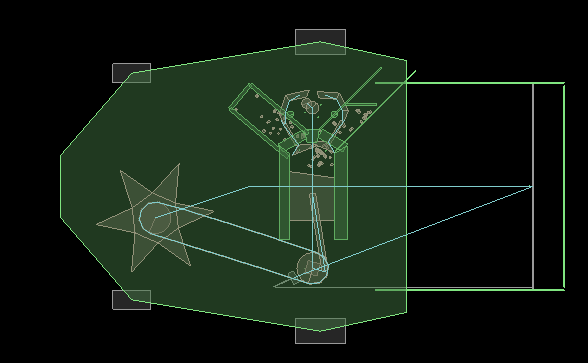
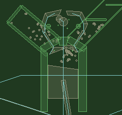
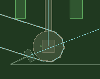
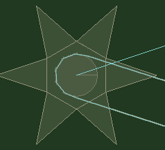
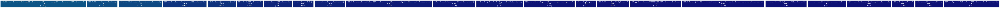
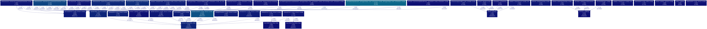

Introduction
We have simulated the design proposed earlier of a lawn mower with 10 (more than 10) working parts in Box2D, the 10 main working parts are as follows:
Blade
Belt
Crank Shaft
Rotor motor
Piston
Connecting Rod
Fuel Intake valve
Exhaust valve
Fuel
Brake
Ignition sensor (joint)
Design and Implementation
USF of design
Automatically moving piston
The whole assembly is not being driven by any external motor, the motion of piston is because of the simulated motion of fuel which will be triggered when the crank is given a initial torque by pressing the start button.
Modelling of fluid
Fluid is modelled as particles coming from the fuel chamber, when the fuel explodes the average velocity of the particles increases they gain high energy and try to escape out.
Explosion of fluid particles
Explosion of fluid particles increases the average velocity, which is equivalent to conversion in state as the gaseous particles tends to have more velocity than in liquid phase.
Ignition sensor
The increase in velocity of the particles is controlled by a sensor, when this sensor is asserted the particles gains more velocity causing them to move faster. Sensors are also used to change the density of the particles to push the piston downwards.
Auto fuel generation
Fuel generation in the system is controlled by the speed at which fuel is being used up by the piston-assembly. If the rotor rotates faster means the blade has higher rpm them more fuel is generated.
Keyboard Controls
Machine can be stared using keyboard which gives an impulse to the rotor motor that sets everything in motion, Machine can be stopped by pull the rubber stopper which slows down the rotor motor and prevents creation of more fuel.
Smoke Filter
Fuel is not directly thrown out of the system, it is allowed to pass through a filter ans coarse particles are destroyed in the system itself. Go Green!!Mechanism and Engine
Piston Assembly
Valve Assembly
Valve in the simulation provide a passage for fuel to move from fuel chamber to piston chamber periodically and when needed. Fuel tank generates fuel on its own(unlimitedly :D). This assembly also consist of a top-gear assembly that causes the to-and-fro motion of the valve, the right side of valve assembly has the smoke-outlet that provides way for the smoke to move out of the piston chamber. The two rods at the side along the two sides of the piston chamber prevents the fuel from moving out of the chamber.Crank Shaft
Central Rotor is the main connecting part that connects the piston-valve-assembly with the actual grass-cutting assembly. It is connected to blade through a conveyor belt, and to the piston with a solid connector. The motion of piston because of the fuel ignition causes the motion of this rotor, which then causes the gear in the blade to move because of friction, which further drives the main cutting blade. {CrankShaft}Cutting Blade
Cutting blade is indeed the actual cutting tool in the lawn mower driven by several gears connected to it as explained above. The Blade is connected to a central circular wheel that can rotate around its center, further the rotation of the wheel causes the rotation of the blade. The wheel is wrapped around by a conveyor belt as described above.Profiling and Timing
As most of the simulation revolves around bodies colliding with each other to generate events, we have optimized those function by manually tweaking the parameters position/velocity/number of particles etc. We have tried different values for optimised angles and the velocities and chosen the one that suits our need. In Debug mode maximum time is taken by findMaxSeperation function which is predefined in Box2D, we believe that the large time is because of the large number of collision that are taking place in our system; whereas in release mode the function that is taking maximum time is CollideEdgeandPoygon.
Release Mode

Debug Mode
Interpolation of Graphs
Plot describing Average step and loop time (Y) over Iteration values (X)
The average step time for every iteration on X-axis varies as it is the time for one step which include all the background processes which consumes some constant time on that particular system. So, for more number of iterations, this time is divided and as a result, "average step time" decreases. The loop time is the total time for the 'for' loop to run with number equal to 'iteration number', and hence, it is obvious that loop-time will increase as we go forard in +x-direction.Plot descibing all the averages(Y) over Iteration number(X)
For a certain number of iterations, sum of position-update, velocity-update and collision update takes more time than their individual times and lesser than average seperation time. Moreover, velocity-updates takes more time than collision calculations which in turn takes slightly more time than position-update time. Because, the positions are first updated, which inturn is used to calculate the collisions, which updates the velocities of the bodies.Analysis of the Error bars of Avg step time over Iterations
Variable-2(Number of Iterations) : When the iteration number increases, the loop run for more time giving more possibility that step-time deviates from the mean. Hence, when the number of iterations is increasing towards '+ve X-axis', the average is damping towards '0' and the error bar is more deviated from the mean-point.Analysis of Frequency plot of the step times and cumulative graph
The slope of the cumulative graph will explain the possibility of the plot in that region on X-axis. The more the slope of the cumulative graph, the more is the probability of plot in that region.Plot of Best Fit line for step time averaged
As the number of iterations increase, the average step-time values are nearer to each other and the graphs start behaving similarly. As a result,for a particular iteration value, if we increase the number of iterations, the average distance between corresponding points on two graphs decreases and the best fit line seem to converge.This is due to the fact that average for randomly executed reruns is more accurate for larger value of iterations.We could see considerable difference in the best fit line when executed for smaller iterations. Also, increase number of reruns helps in converging both the best-fit lines.Conclusion and Difference
Box2d provides a good framework for physics simulation and is useful to demonstrate working of engine.Difference from the design proposed earlier: Instead of making a starting wire, we have made a start button (Keyboard Input) to facilitate the working of lawn mower, and to keep the design cleaner.
Some new parts like the support valve on the two sides are added to make the design more robust. \cite{Latex}